Cocaine and Conway’s Law
what young software engineers need to learn and how we should teach it
2026-10-06
Outline
- Software has changed everything
- Often for the worse
- Rising inequality
- Radicalization
- Ubiquitous surveillance
- And now there’s AI to worry about
- Most discussion by technologists is shallow
- Andreessen’s “Techno-Optimist Manifesto” was embarrassing
- If we want better answers, we need to:
- Develop a better threat model
- Be humble enough to learn from others
- Get students to care
Three Traditions
- Tedre & Sutinen: “Three Traditions of Computing” (2008)
| Mathematical | Engineering | Scientific | |
|---|---|---|---|
| Assumptions | Programs (algorithms) are abstract objects, they are correct or incorrect, as well as more or less efficient | Programs (processes) affect the world, they are more or less effective and reliable | Programs can model information processes, models are more or less accurate |
| Aims | Coherent theoretical structures and systems | Investigating and explaining phenomena, solving problems | Constructing useful, efficient, and reliable systems; solving problems |
| Strengths | Rigorous, results are certain, utilized in other traditions | Combines deduction and induction, cumulative | Able to work under great uncertainty, flexible, progress is tangible |
| Weaknesses | Incommensurability of results, uncertainty about what counts as proper science | Limited to axiomatic systems | Rarely follows rigid, preordained procedures; poor generalizability |
| Methods | Empirical, inductive, and deductive | Analytic, deductive (and inductive) | Empirical, constructive |
A Fourth Tradition
- Programming as if people mattered
| … | Humanist tradition | |
|---|---|---|
| Assumptions | … | Programs are built by people working in particular social settings to serve personal and organizational needs shaped by those settings. |
| Aims | … | Explanations of why software is built the way it is by the people who build it. |
| Strengths | … | Explains which problems (and which problem solvers) are considered “valid”. |
| Weaknesses | … | Poor generalizability; often viewed as “story telling” by people unfamiliar with social science methods. |
| Methods | … | Empirical and qualitative. |
Examples
- Petre: “UML
in Practice” (2013)
- Careful analysis of interviews to determine why people don’t use UML
- Steinmacher et al: “Social Barriers Faced by
Newcomers Placing Their First Contribution in Open Source Software
Projects” (2015)
- How easy it is to get set up to make a contribution
- How easy it is to find a task to start with
- How warmly first contribution is received
- Sedano et al: “Software Development
Waste” (2017)
- Nine types of waste in software projects, none of which are software issues
- Hicks: “It’s Like
Coding in the Dark” (2022)
- Programmers don’t learn because they’re afraid to reveal ignorance
A Better Threat Model
- Therac-25
incident and Ariane 5 flight
V88
- Direct cause-and-effect relationships
- But incidents are rare and feel remote
- Cognitive pollution is a better model
- Tetraethyl lead and asbestos
- Tobacco vs. pesticides
- Oxycodone and Purdue Pharma
- The fossil fuels lobby’s campaign to promote climate change denial
- Meta’s role in the Rohingya
genocide
- “…the military used dozens of seemingly unrelated Facebook pages to spread hate speech…before the 2017 attacks.”
So How Do We Reach This Guy?
Jay is 21, white, straight, and male. He went into programming because he enjoys solving puzzles, and daydreams about being the next Mark Zuckerberg. He would deny being racist, homophobic, or misogynist, but makes disparaging jokes about “cancel culture” and “DEI hires” to fit in with his peers. His favorite phrase in arguments is, “Well, actually…”
- Jay knows little or nothing about the humanities and social sciences
- Most material assumes concepts he has never heard of…
- …which makes him feel stupid…
- …which makes him tune out
Facts Aren’t Enough
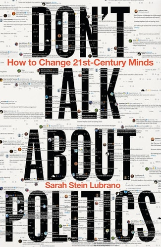
- People choose beliefs based on group membership rather than vice versa
- Changing their minds therefore has a high social cost
People want data, but believe stories.
Will Management Books Save Us?
- Drasner: Engineering Management for the Rest of Us (2022)
- Fournier: The Manager’s Path (2017)
- Hughes Johnson: Scaling People (2023)
- Huston: The Engineering Leader (2024)
- Larson: Staff Engineer (2021)
- Lau: The Effective Engineer (2015)
- Orosz: The Software Engineer’s Guidebook (2023)
- Reilly: The Staff Engineer’s Path (2022)
- Skelton & Pais: Team Topologies (2019)
- Stanier: Become an Effective Software Engineering Manager (2020)
- Swerdlow: Tech Leadership (2023)
- Taze: Engineers Survival Guide (2021)
Disappointing Gaps
- Employees’ rights: nothing
- Co-operatives, practices, and other models: nope
- Workplace discrimination: less than 8 pages between 12 books
- But all about how to handle it as a manager
- Why there isn’t licensure or professional liability: nope
None of the courses on entrepreneurship or the business of software that I looked at covered these topics either.
Why Don’t We Talk About This?
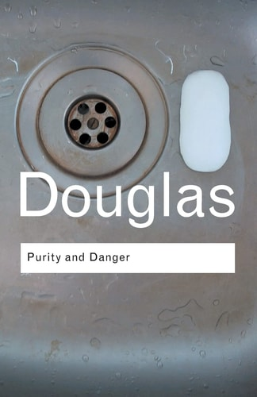
- Every group places some things out of bounds as a way of identifying who’s in and who’s out
- Racial slurs I used as a young man are now taboo…
- …while public discussion of sexuality is now accepted
- People in “hard” disciplines tend to look down on the “soft” ones
- Until they become managers…
- But these insights can help us build better software and a better society
Speaking of Taboo
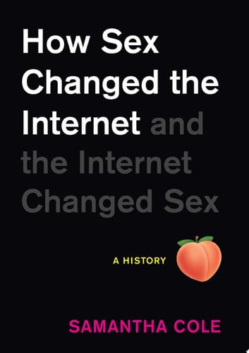
- This is going to drive a lot of the regulation around AI
- So we ought to be talking about it
“Politics” Should’t be a Dirty Word
- A reviewer said “politics doesn’t belong in software engineering courses”
- But not talking about these things, while talking about venture capital and IPOs, is a “political” decision
- Most of the people who use the word “politics” as an insult would struggle to define it correctly
- “Decision-making in groups in the absence of agreement on goals”
Several of the books we’re about to discuss don’t align with my personal beliefs, but are still examples of deep thinking and deserve to be taken seriously.
Looking Elsewhere
- Béranger: Medical Information Systems Ethics
- Goltz & Dowdesell: Real World AI Ethics for Data Scientists (2023)
- Kizza: Ethical and Secure Computing (2023)
- Schlossberger: Ethical Engineering: A Practical Guide with Case Studies (2023)
- Steen: Ethics for People Who Work in Tech (2022)
It doesn’t matter what you say if no one is awake to hear it.
It Can Be Interesting
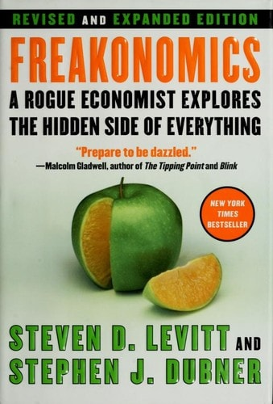
- “The profit motive is the only valid way to analyze individual behavior”
- …which is provably wrong, but their writing is engaging
- Guys like Jay are suckers for simple answers to hard questions that fit their preconceived ideas…
- …especially when they’ve never heard the alternatives
- Possibly the most effective piece of propaganda in the last thirty years
- Can we do this, but for good?
More Relevant to Big Tech
- What does capitalism look like in its purest form?
- Turns out that marketing, HR, and dispute resolution are challenging
- Big tech companies sell deliberately addictive products…
- …treat the law as a business expense…
- …and are frequently run by narcissists
Recognize Fraud
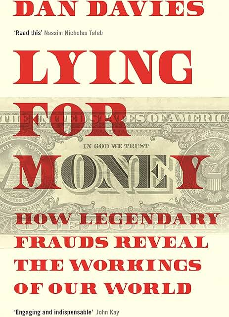
- You will understand some tech companies’ business models better once you can recognize common types of fraud
Organizational Knowledge
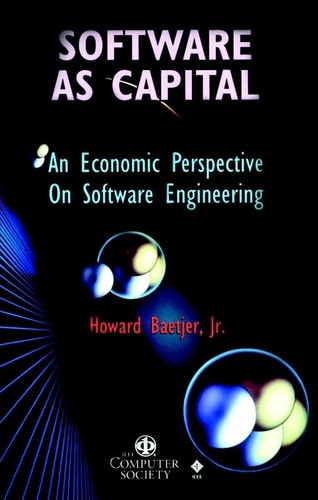
- No single person knows how to make a car (or Linux)
- Tools for thinking about the value of institutional knowledge and how we preserve it
Conway’s Law and sociotechnical congruence should be part of every software engineer’s education.
Speaking of Conway’s Law
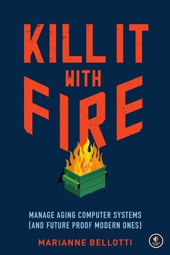
- Cannot modernize legacy software without changing the social structures that produced them…
- …and are now supported by them
- “If you want to know what parts of the project are suffering the most, pay attention to what the team is having meetings about.”
- And many other insights
Central vs. Distributed Control
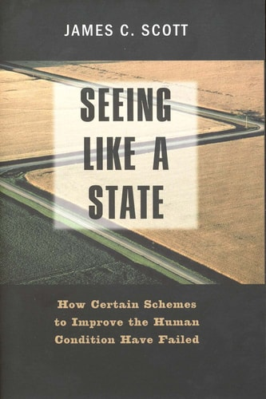
- Large organizations always prefer legibility over productivity
- Because the former gives the center some degree of control
“Do it however you want” also has a price.
Another Example
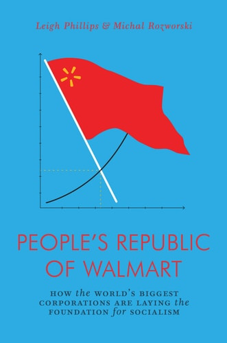
- Most of the world’s economic activity occurs within large companies like Walmart and Amazon
- Which all use Soviet-style central planning
- Did the USSR just not have the right IT?
- Have big companies just managed to outsource the failure?
- Or is there some deeper difference?
Give programmers the intellectual tools they need to ask these questions and distinguish credible answers from ones that are merely plausible.
Decision Making
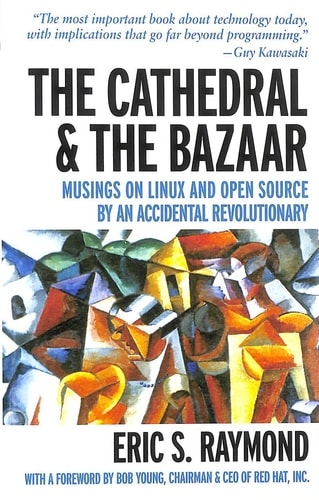
- A compelling but misleading myth about the social organization of open source
- Freeman:
“The
Tyranny of Structurelessness” (1972)
- Every social group has a power structure
- Only question is whether it is explicit and accountable or implicit and unaccountable
Fairness and Productivity
- Greater equality improves outcomes for everyone
- If the game is fair, it’s worth playing
- If it isn’t, people don’t play because they’re either sure to win or to lose
If you can convince the lowest white man he’s better than the best colored man, he won’t notice you’re picking his pocket. Hell, give him somebody to look down on and he’ll empty his pockets for you.
— Lyndon B. Johnson
Where Does Property Come From?
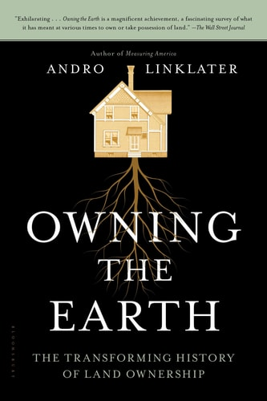
Andro Linklater:
Owning the
Earth: The Transforming History of Land Ownership (2015)
The idea that individuals can own land is younger than most people
realize; its emergence holds lessons for today’s debates over
intellectual property.
Oren Bracha:
Owning Ideas:
The Intellectual Origins of American Intellectual Property,
1790–1909 (2019)
The idea of “intangible property” is also
fairly new; understanding why and how it was invented is essential to
understanding debates about training data for AI.
Sarah E. Igo:
The Known
Citizen: A History of Privacy in Modern America (2020)
The
right to privacy is the youngest and least evolved of the three.
Professional Responsibility
- Contrasts “blame the individual” with “blame the system”
- Shows that companies push the latter to absolve themselves of responsibility
Licensure and security make more sense when thought about this way.
How Corporations Fail
- There are patterns in the dynamics of corporate scandals
- If we teach them, can we prevent them?
|
rigid ideology toxic leadership manipulative language |
corrupting goals destructive incentives ambiguous rules |
perceived unfairness dangerous groups slippery slope |
Closer to Home
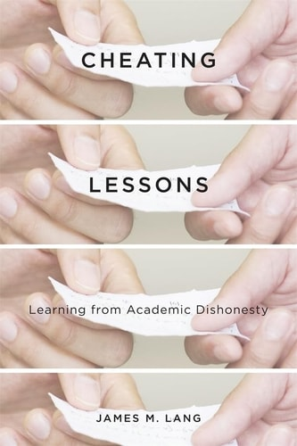
- Personalize discussion of motivation and misaligned incentives
- See if students can apply what they’ve learned
The Point Is To Change It
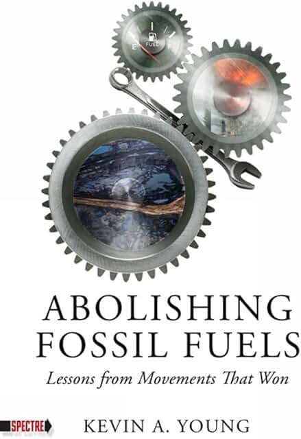
- Social reform only happens when economic pressure is applied
- “Protests make headlines, but boycotts change laws”
Why This Matters
- This is the worst job market for junior programmers ever
- People whose hopes have failed look for someone to blame
- If we don’t explain how the world works, someone much less pleasant will do so
It is 2035. Most men under 20 have learned what they “know” about what women like from AI chatbots trained on porn and tuned to maximize engagement. The people who have earned billions from these systems cannot legally be held accountable for their users’ actions.
How does that make you feel?
Conclusion (?)
- My generation squandered the best world we’ve ever had
- But better is possible
- The best we can do now is help you learn things that we chose to ignore
- And it’s fun (if you skip the boring bits)
Thank You

start where you are · use what you have · help who you can